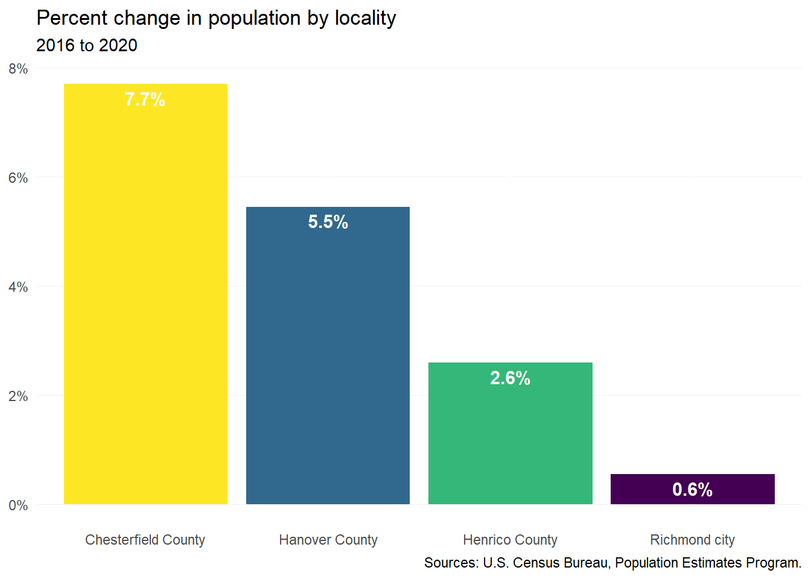
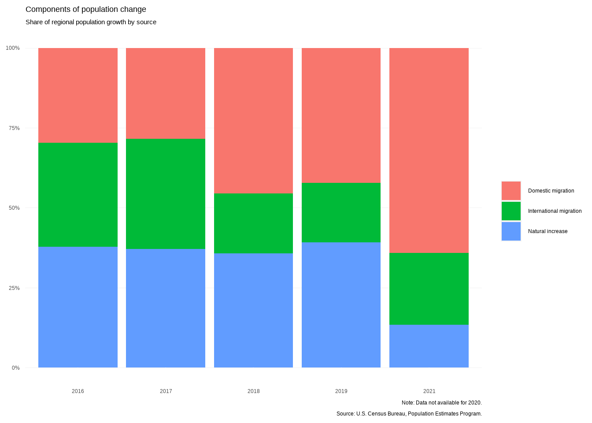
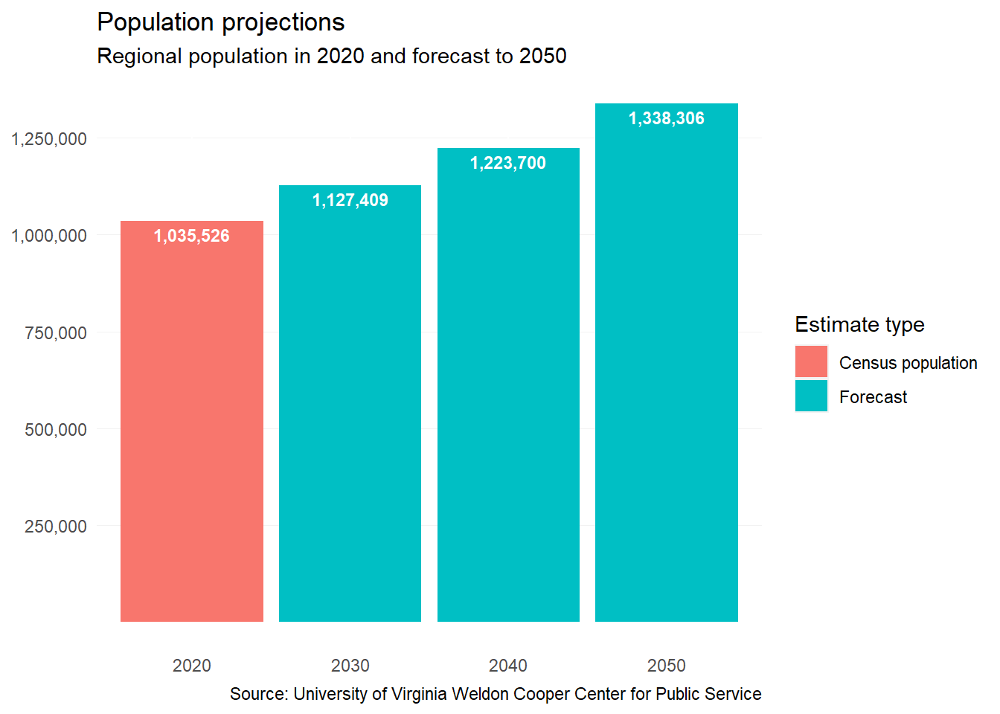
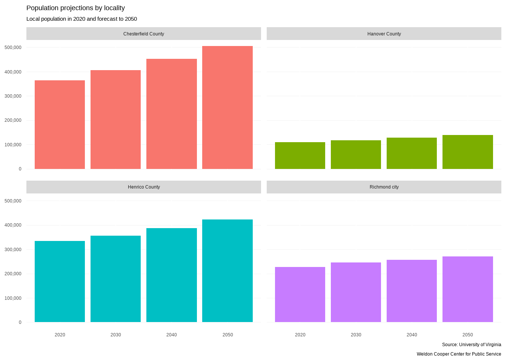

1 Population changes
1.1 Total population growth
The Richmond region has continued to grow between 2016 and 2020—adding a net of 41,457 residents across the four major localities. The most populous locality, Chesterfield County, experienced a near eight percent increase in its population during this timeframe.

1.2 Components of population change
In recent years, nearly two thirds of growth could be attributed to either domestic or international migration into the region. But between 2020 and 2021, that share increased to over three quarters—reducing the portion of the population growing due to natural increase to only 13 percent.
The region’s growth continues to be driven primarily by new people coming from other parts of the state and nation (64 percent of growth between 2020 and 2021).

1.3 Population projections
Between 2020 and 2050, the region is expected to grow by nearly a third (29 percent)—reaching 1,338,306 residents.

Over the next 30 years, Chesterfield County will continue to lead growth across the region. By 2050, Chesterfield is expected to surpass half a million residents, growing by 38 percent from the 2020 Census estimates.
Population growth trends will largely continue as they have with Hanover County experiencing the second greatest growth from their 2020 estimates (27 percent increase). Henrico County follows with a 26 percent increase (+88,565), while the City of Richmond will only increase by about a fifth (20 percent) over 30 years.
